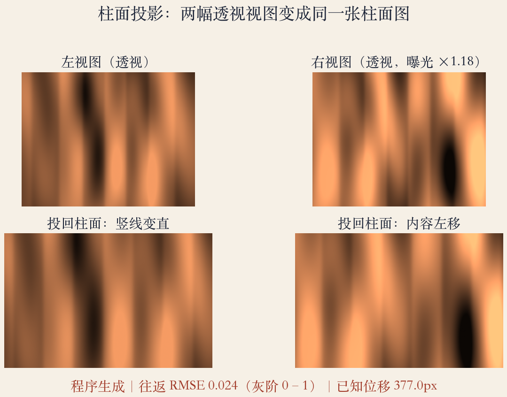
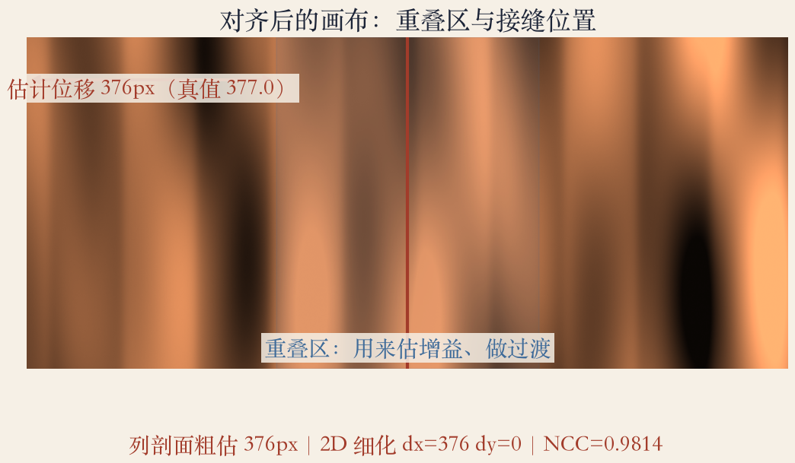
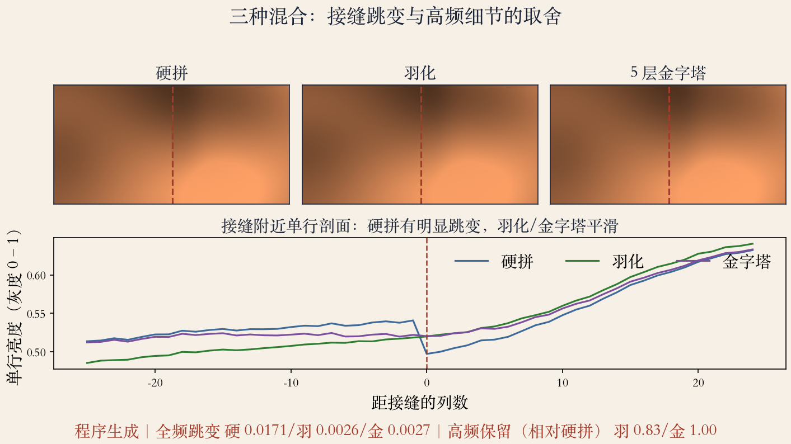

第 8 章上机 · 程序生成场景
三步，把两图变成全景
- 三步：柱面投影、平移对齐、混合。
- 透视不同、亮度不同，接缝也对不齐。
- 本集不新增书页，数字来自程序生成场景。
- 焦距、转角和增益已知，才能量误差。
依据：原书第 523–545 页
本集三条线
柱面：先把透视卷平
对齐：只搜水平位移
混合：先估增益再过渡
实验场景 · 真值已知
先有真值，再谈误差
- 焦距六百，左右相机各偏十八度。
- 右图整体乘一点一八。
- 再加轻微渐晕和一块局部阴影。
- 参数写在代码顶部，改一行可复现。
依据：本集实验
为什么用程序生成
可复现、可量误差
纹理比真实世界干净
结论只验证骨架
第一步 · 柱面投影
柱面投影：角度均匀铺开
- 横坐标等于焦距乘角度。
- 纵坐标等于焦距乘归一化高度。
- 高度是三维射线竖直方向的分量。
- 反变换：横坐标取正切，纵坐标除以余弦。
依据：原书第 523–524 页；本集实验
x = F·θ，y = F·h
F：焦距；θ：水平角；h：射线的竖直分量
第一步 · 看投影结果
投影：把透视卷到柱面
- 上排是透视视图，下排是柱面图。
- 同一世界方向落在相同高度。
- 横向透视拉伸被拉直，右图内容左移。
- 重叠区还在，后面靠它找位移。
依据：本集实验

两幅透视视图投回柱面：横向拉直，右图内容左移｜程序生成，未用教材或论文原图
第二步 · 纯水平平移
只转竖轴，就只剩水平位移
- 相机水平、只绕竖轴转。
- 柱面上只差纯水平平移。
- 相隔三十六度，理论位移约三百七十七像素。
- 纵向固定为零，搜索只做水平方向。
依据：原书第 525 页；本集实验
Δx = F · Δθ
F：焦距；Δθ：两相机转角差
第二步 · 对齐
对齐：先粗后细
- 一维列剖面粗搜到三百七十五像素。
- 二维归一化相关细化到三百七十六。
- 相关系数零点九八一。
- 差一像素来自离散采样，生产要亚像素。
依据：原书第 504 页；本集实验
为什么先粗后细
全分辨率硬搜太慢
缩小图先定大位置
原图附近再微调
第二步 · 画布与接缝
画布：重叠区是工作面
- 右图放到画布上，重叠区约三百九十六像素。
- 接缝取在重叠区中点。
- 重叠太长浪费视角，太短难藏缝。
- 生产只用中间一段，避开黑边和畸变。
依据：本集实验

对齐后的画布：重叠区约 396 像素，接缝取在中点｜程序生成，未用教材或论文原图
第三步 · 曝光增益
曝光：一个数不够
- 混合要补偿曝光差和错位。
- 在重叠区做最小二乘，估全局增益。
- 估到一点一零七，名义增益一点一八。
- 重叠区落在较暗一侧，单个数只代表局部。
依据：原书第 544 页；本集实验
两个增益
估计 1.107：重叠区残差最小
期望 1.111：重叠区均值
名义 1.18：整张右图
第三步 · 硬拼对照
硬拼：残差变成一条线
- 接缝左边用左图，右边用右图。
- 全频跳变约零点零一七，是周围起伏的五倍多。
- 亮差、噪声、插值误差挤在一条竖线上。
- 保真不糊细节，但只适合完全对齐。
依据：本集实验
硬拼读数
全频跳变：0.017
周围基线：0.003
倍数：五倍多
第三步 · 羽化
羽化：把硬缝摊成宽带
- 羽化给重叠区一条线性权重。
- 从左图慢慢过渡到右图。
- 跳变降到零点零零三，约为硬拼的六分之一。
- 代价是细节只剩硬拼的零点八三。
依据：原书第 544 页；本集实验
羽化的两难
低频台阶被摊平
高频被平均变软
过渡越宽，细节越糊
第三步 · 拉普拉斯金字塔
金字塔：按频段分工
- 拉普拉斯金字塔把图分成五个频段。
- 低频用宽过渡，高频用窄过渡。
- 跳变也降到零点零零三。
- 高频强度保持硬拼的百分之一百。
依据：原书第 545 页；本集实验
五层分工
粗层管大色调
细层管边缘
没对齐时粗层抹成重影
三种混合 · 对照
三种混合：接缝与细节
- 上排是接缝裁剪，下排是单行亮度剖面。
- 硬拼有竖台阶，羽化和金字塔抹平。
- 羽化过渡更软，金字塔细节更接近硬拼。
- 全频跳变看缝，高频强度看细节。
依据：本集实验

三种混合的接缝裁剪与单行剖面：硬拼有台阶，羽化与金字塔平滑｜程序生成，未用教材或论文原图
排错 · 三类翻车
翻车：先查是哪一步
- 重叠不够，相关峰变平，位移估错。
- 焦距或投影选错，柱面里直线还弯。
- 近处物体运动，接缝出现鬼影。
- 先看相关系数和残差，再看接缝。
依据：本集实验
排查顺序
相关低：查对齐
相关高但有缝：查曝光和混合
先体检数据，再调参数
工程习惯 · 留证据
调试：每一步都留证据
- 存柱面图、位移、增益。
- 再存掩膜和三种混合结果。
- 出错能定位到哪一步，不做黑箱。
- 换场景再跑，看数字稳不稳定。
依据：本集实验
证据链
参数和指标写进小表
换数据直接对比
中间图也能当教学材料
生产差距 · 还缺什么
差距：实验不是产品
- 颜色和伽马没处理。
- 镜头畸变没标定。
- 多图要做捆扎调整。
- 大曝光差要回辐照度域。
依据：原书第 545–547 页
补模块的顺序
先保证几何正确
再谈色彩和观感
骨架没通，调色会藏错
第 8 章上机 · 收束
第 8 章上机收束
- 柱面把旋转变成平移。
- 重叠区是对齐证据，也是混合工作面。
- 羽化抹平接缝，金字塔按频段分工。
- 下一集进第 9 章：运动估计。
依据：原书第 523–545 页
往后走
从静态全景到运动估计
两帧位移是最简单的特例
再往后是光流和特征跟踪